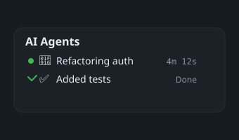
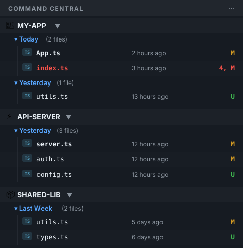

Free & open source
Stop managing terminals.
Start managing agents.
The VS Code sidebar that sees all your AI coding agents — even the ones running in external terminals VS Code can't see.

The VS Code sidebar that sees all your AI coding agents — even the ones running in external terminals VS Code can't see.

Five agents. Five terminals.
Cmd+Tab roulette to find the one that just finished.
Invisible agents.
VS Code's Agent Sessions only sees agents it spawned. External terminals? Invisible.
Runaway agent.
That Claude Code instance has been running for 40 minutes. Is it stuck or just thinking?
Auto-discovers Claude Code, Codex, and Gemini instances via process scanning and session files. Ghostty, iTerm2, Terminal.app, tmux — doesn't matter.

Click an agent → its terminal window comes to front. No more hunting through Dock icons and tmux sessions.

Every file every agent touches, sorted by time. See what changed this minute, this hour, or overnight.

No configuration. No daemon. No API keys.
Install the extension
One click from the VS Code Marketplace.
Run your agents anywhere
Ghostty, iTerm2, tmux, VS Code terminal — your choice.
They appear in your sidebar
Auto-discovered. Status, uptime, project. Click to focus.
Free and open source. Always.
ext install oste.command-central